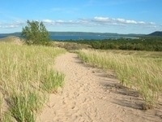
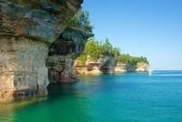
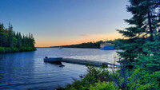

National Parks of Michigan
Sleeping Bear Dunes National Lakeshore

"Miles of sand beach, bluffs that tower 450’ above Lake Michigan, lush forests, clear inland lakes, unique flora and fauna make up the natural world of Sleeping Bear Dunes.
High dunes afford spectacular views across the lake.
An island lighthouse, US Life-Saving Service stations, coastal villages, and picturesque farmsteads reflect the park’s rich maritime, agricultural, and recreational history."
Retrieved from https://www.nps.gov/state/mi/index.htm on February 6, 2022
Image by National Park Service
{kind=link}
Pictured Rocks National Lakeshore

"Sandstone cliffs, beaches, sand dunes, waterfalls, inland lakes, deep forest, and wild shoreline beckon you to visit Pictured Rocks National Lakeshore.
The power of Lake Superior shapes the park's coastal features and affects every ecosystem, creating a unique landscape to explore.
Hiking, camping, sightseeing, and four-season outdoor opportunities abound."
Retrieved from https://www.nps.gov/state/mi/index.htm on February 6, 2022
Image by National Park Service
{kind=link}
Isle Royale National Park

"Explore a rugged, isolated island, far from the sights and sounds of civilization.
Surrounded by Lake Superior, Isle Royale offers adventures for backpackers, hikers, boaters, kayakers, canoeists and scuba divers.
Here, amid stunning scenic beauty, you'll find opportunities for reflection and discovery, and make memories that last a lifetime."
Retrieved from https://www.nps.gov/state/mi/index.htm on February 6, 2022
Image by National Park Service
{kind=link}